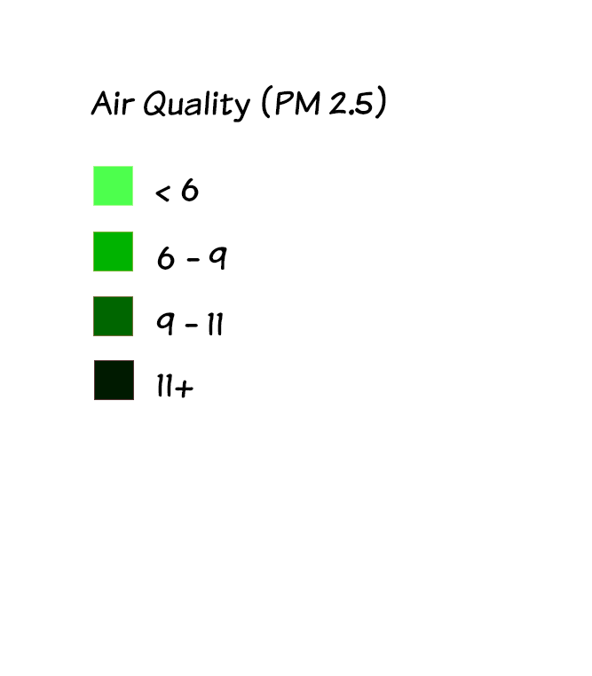
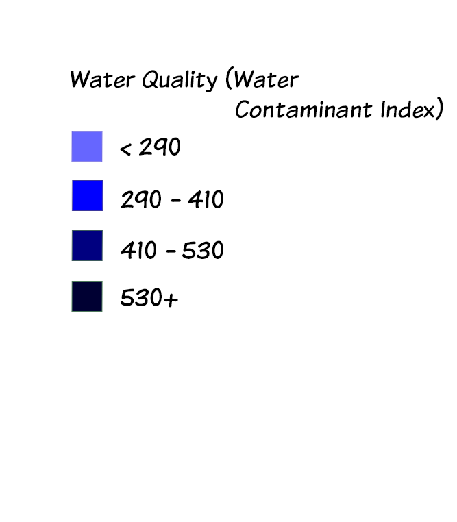
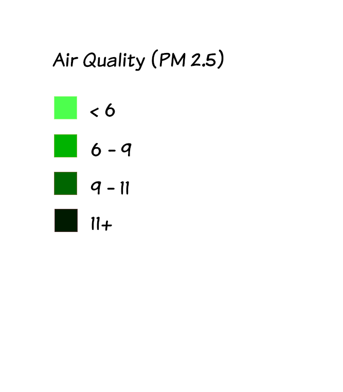
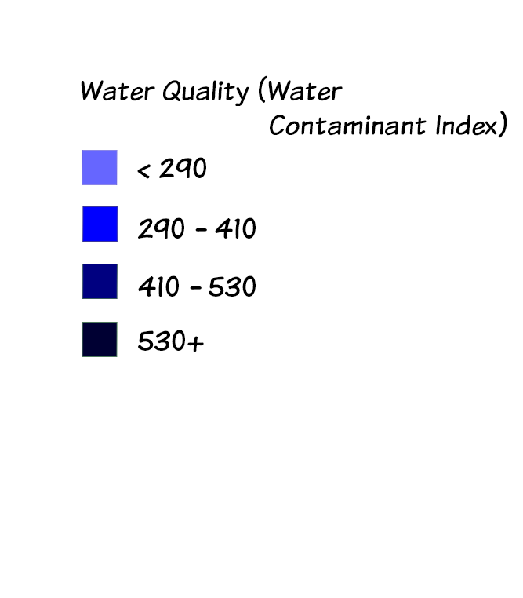

DataCal is a website that visualizes government data from California based on counties. Our goal is to create a centralized application so that you can easily track the health of a prospective county.
 


